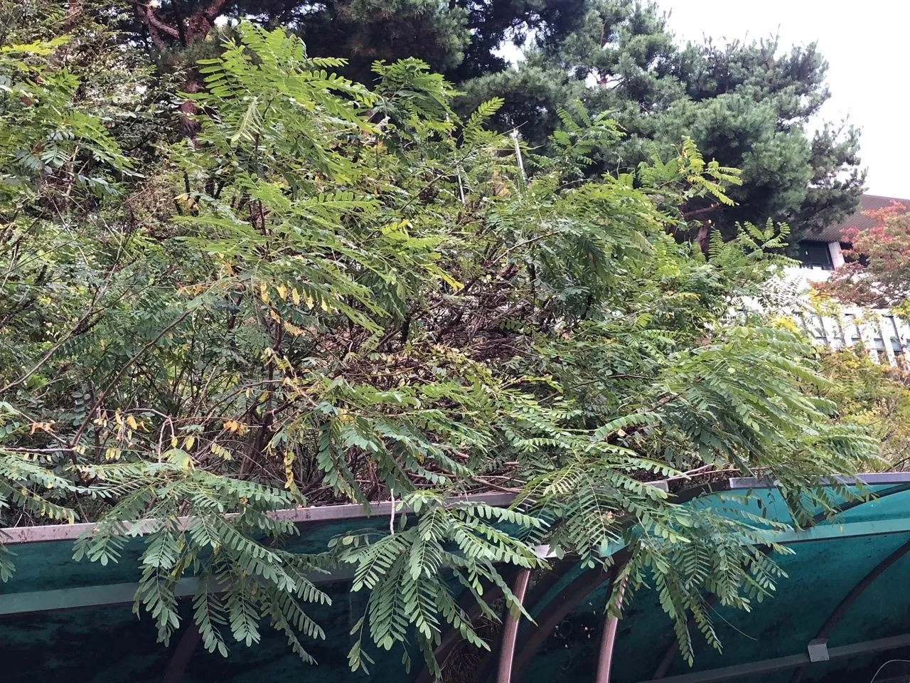

Gallery

Details
- 학명: Amorpha fruticosa
- 원산지: 북아메리카
- 높이: 최대 3미터
- 형태적 특징:
- 잎: 깃꼴겹잎, 11~25개의 작은 잎으로 구성
- 꽃: 5~6월에 개화, 짙은 자줏빛 푸른색, 향기가 진함
- 열매: 작은 꼬투리열매, 9월에 익음, 약간 굽은 모양
- 특징:
- 공해, 추위, 건조에 강함
- 내한성이 매우 높음 (영하 34도까지 견딤)
- 가뭄에 강해 연간 강수량 200mm에서도 생존 가능
- 용도:
- 정원수
- 사방 목적
- 방풍림
- 사료
- 광주리 재료
Location
경기도 부천 원미구 원미동, 원미공원